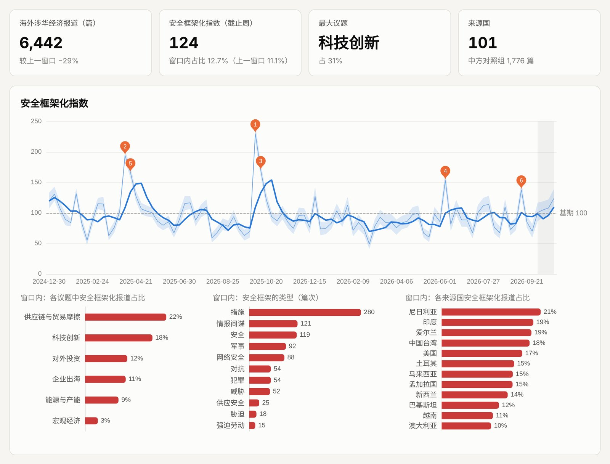
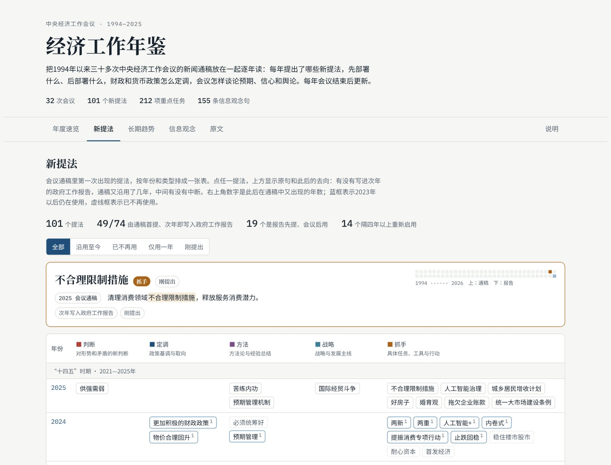

人机传播
研究人机协作、AI新闻与认知让渡，关注人工智能对传播与公众认知的影响。
清华大学新闻与传播学院 · 新闻与传播学博士研究生
清华大学新闻与传播学院博士研究生，主要从事人机传播、经济传播、国际传播与传媒产业研究。已发表学术论文12篇，另有1篇录用待刊，成果见于《国际新闻界》《现代传播》《电影艺术》等国内外重要学术期刊，多次入选ICA、AEJMC、IAMCR、NCA四大国际传播学术会议。获2026年AEJMC最佳学生论文奖、第七届青年新媒体学术研究“启皓奖”学术新秀奖，资政成果获中央有关部门批示。
研究方向
左右滑动查看研究方向
研究人机协作、AI新闻与认知让渡，关注人工智能对传播与公众认知的影响。
研究财经新闻与经济政策传播，关注新闻如何影响公众信心与预期。
研究中国经济与企业的国际传播，关注跨国数字平台、经济叙事与国家形象。
研究传媒产业变迁与数字文化，关注产业制度逻辑及社交媒体中的文化与性别表达。
教育背景
新加坡国立大学 · 新加坡
导师：祁东涛 | 东亚研究所（EAI）清华大学 · 中国
GPA: 3.95/4.0 | 导师：杭敏 | 经济传播研究中心中国传媒大学 · 中国
GPA: 3.99/4.0 | 导师：郑苏晖 | 商务品牌战略研究所北京外国语大学 · 中国
GPA: 3.63/4.0 | 韩国又松大学 SolBridge 交换（2017）代表成果
Causes and countermeasures of public opinion risks faced by transnational digital platforms in information geopolitics
Can AI match the expertise of financial journalists in writing news commentary? An online experimental analysis based on the HSM model
四大会议 · 第一作者
Lu, H. · AEJMC Annual Conference, CTEC Division · New Orleans, United States
最佳学生论文奖Lu, H. · IAMCR Annual Conference, Media Education Research Section · Galway, Ireland
Lu, H., & Huang, P. · 76th ICA, Feminist Scholarship Division · Cape Town, South Africa
Lu, H. · 111th NCA, Political Communication Division · Denver, United States
交互看板

每周自动更新的全球英文涉华经济报道监测：议题、国别、叙事与经济安全化指数。

1994年以来中央经济工作会议通稿的逐年解读：每年有哪些新提法，先部署什么，政策怎么定调。
荣誉
联系